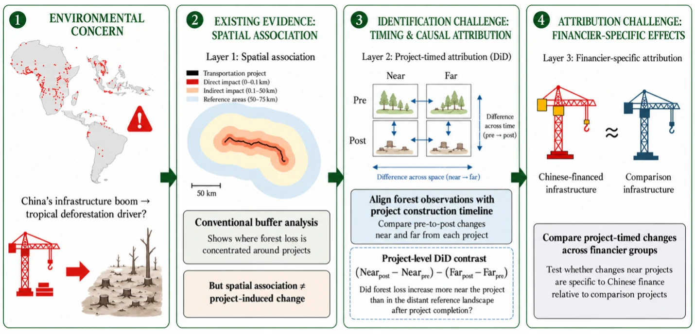

Mapping the Environmental Impacts of Chinese Overseas Investments
This project examines how Chinese overseas investment shapes land use and land cover change across the Global South. Integrating overseas infrastructure finance databases with NASA MEaSUREs 30 m long-term LULCC records, it moves from spatial association to project-timed causal inference (difference-in-differences) and financier-specific attribution, revealing land-change patterns and their implications for carbon, biodiversity, and water resources.